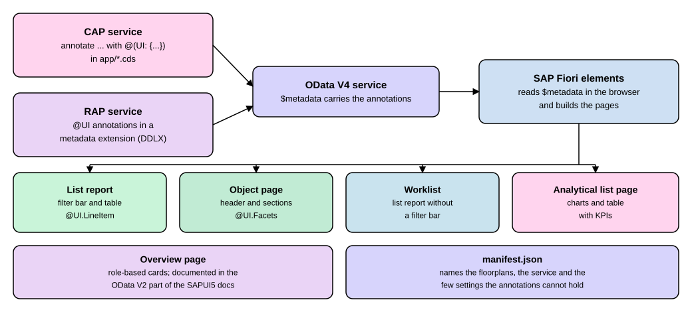

SAP Fiori Elements
|
This content was generated with the assistance of AI and should be verified against the official documentation before being relied on in production. |
Most business apps in SAP S/4HANA look alike: a page with filters and a table of items, and a second page that shows one item in detail and lets you change it. Writing that screen by hand for every business object is slow and makes the apps behave differently from one another. SAP Fiori elements is SAP’s answer. It is a generic front end that builds such pages at run time from the description of the data that the back end serves, so a developer writes annotations instead of screen code. This page explains the idea, the page types SAP calls floorplans, the annotations that drive them (written in CAP for a service on SAP BTP, and in RAP for an ABAP service), how drafts let a user save half-finished work, and where you can step in when the generated page is not enough. It is written against SAPUI5 1.154 (the latest release, with 1.148 as the long-term-support release) and applies to SAP Fiori elements for OData V4, which SAP recommends for new apps, to CAP Node.js 10.2 and to RAP in ABAP Cloud 9.20 (2608) and SAP S/4HANA on premise. The CAP parts were run on 2026-11-13 in the account-free lab of this site. The RAP parts require an SAP system and were not run here.
Before you read
-
CAP Getting Started: the
cdscommand,cds watchand the foldersdb/,srv/andapp/that the lab uses. -
CAP Domain Modeling: entities and the
cuidandmanagedbuilding blocks behind the claim in the examples. -
SAP Fiori Launchpad: the page from which users start a Fiori elements app.
-
CDS Annotations and Metadata Extensions: the ABAP side of the same annotations.
Key terms
-
SAP Fiori elements: a generic front end that builds the pages of an app from the metadata and annotations of an OData service.
-
Floorplan: a ready-made page type, such as the list report or the object page.
-
Annotation: a short piece of metadata attached to an entity or a field that tells a front end how to show it.
-
Draft: an unfinished copy of a business object that the server stores until the user saves or discards it.
-
Building block: a reusable piece of a Fiori elements page, such as a table, that you can place on a custom page.
-
OData: the web protocol in which the back end serves the data and the annotations.
The idea: pages generated from metadata
A normal web app has screen code: markup for the filter fields, markup for the table, code that fetches the rows. In a
Fiori elements app that code lives in the framework, not in the app. The SAPUI5 documentation describes the framework as a
metadata-driven approach in which you focus on business logic and back-end services, write less UI code and get a
harmonized user experience that follows the SAP Design System. The app itself is small. It holds a manifest file (a JSON
file that names the pages and the service) and, optionally, local annotations and extensions. Everything else is read at
run time from the $metadata document of the OData service, which carries the annotations.
SAP Fiori elements exists for two versions of the OData protocol. For new applications SAP recommends the version for OData V4, because it offers reusable building blocks in addition to the standard floorplans; the version for OData V2 remains fully supported. Older books and tutorials show OData V2, so check which one a page of documentation talks about before you copy a manifest setting.

The diagram shows the division of work. The back end, written once in CAP or RAP, decides which entities exist and what the annotations say. The browser downloads the metadata and builds the pages. A change of a column heading is therefore a change of one annotation line and a reload, not a change of screen code.
The floorplans
A floorplan is a page layout for a typical job. The SAPUI5 documentation lists these for OData V4:
| Floorplan | What it is for | Typical pairing |
|---|---|---|
List report |
Filter, view and work with a large list of business objects shown as a table. |
Entry page; opens an object page |
Object page |
Show the details of one business object, and create and edit it. |
Reached from a list report |
Worklist |
A simplified list report without a filter bar, for items that the user must process, review and complete or delegate. |
Opens an object page |
Analytical list page |
A list report variant with interactive charts, KPI tags and visual filters to analyze data step by step. |
Opens an object page |
Overview page |
A role-based page of cards that gives the big picture and a way to act on it. |
Starts other apps |
Source: SAPUI5: Developing Apps with SAP Fiori Elements. The floorplan descriptions are in the SAP-docs/sapui5 pages Standard Floorplans, List Report Page, Object Page and Worklist Page
The rest of this section shows each floorplan in the order in which a newcomer meets it.
List report and object page
The list report is the page you see first in most apps, and the object page is the page behind a click on a row. The SAPUI5 documentation names the main parts of a list report as a shell bar with the app title and the user menu, variant management (saved sets of filters, sorting and columns that a user can switch between), a share menu, a filter bar, and a content area with a table or a chart. An object page has a shell bar, a header with the title and subtitle of the object and its toolbar buttons, and sections that group the details, with an editing status when a draft exists. The page for the object also offers the create and edit modes, which is why the object page matters for the draft section below.
The two pages are written by annotations of the vocabulary named UI. The ones that this page uses:
| Annotation | Page and effect |
|---|---|
|
List report: one column of the table for each entry. |
|
List report: one filter field of the filter bar for each entry. |
|
Both: the singular and plural name of the object, and the title shown in the object page header. |
|
Object page: the sections (here, one section called General). |
|
Object page: the fields shown inside a section. |
Source: SAPUI5: Working With OData Annotations and the metadata that the lab served (next section)
Worklist
A worklist is a list report with no filter bar. The SAPUI5 documentation says its focus is processing the items, in contrast to the list report, whose focus is filtering content to make a list. You would choose it for a short queue such as claims waiting for your approval.
Analytical list page
The analytical list page combines a chart and a table on one page so that a user can narrow the data step by step. The documentation lists related KPIs as tags in the header, several filter modes (visual filters pick a value from a small chart, with restrictions), navigation from the content and from the KPI cards, and saving the page as a variant. It suits questions such as "which cost centers exceed their budget, and which claims cause it" more than editing single objects.
Overview page
The overview page shows role-based cards with KPIs, tasks and records from several apps in one layout. The documentation
says that it supports both OData V2 and OData V4, uses only the FilterBar building block, and is documented in the
section for OData V2, because its principles come from that version. Treat it as an entry page for managers and approvers,
not as an editing page.
Annotations in CAP: running the lab
The account-free lab of this site holds a small CAP project, expenses, with a draft-enabled Claims entity (title, status and
amount). The annotation file of the lab, app/annotations.cds, reads as follows. The lab claim is a reduced teaching
version of the expense claim of the running example.
using ExpenseService as service from '../srv/expense-service';
annotate service.Claims with @(
UI.LineItem : [{ Value : title }, { Value : status }, { Value : amount }],
UI.HeaderInfo : { TypeName : 'Claim', TypeNamePlural : 'Claims', Title : { Value : title } },
UI.Facets : [{ $Type : 'UI.ReferenceFacet', Label : 'General', Target : '@UI.FieldGroup#General' }],
UI.FieldGroup #General : { Data : [{ Value : title }, { Value : status }, { Value : amount }] }
);Source: the file app/annotations.cds of the lab, described at CAP: Serving SAP Fiori UIs
Read it from the inside out. Value : title points at an element of the entity. UI.LineItem is a list of such
entries, so the table has three columns. UI.HeaderInfo names the object and says that the title of an object page is
the title element. UI.Facets has one reference facet that shows the field group named General, and
UI.FieldGroup #General is that group, with the same three elements. The CAP guide recommends keeping annotations in
separate .cds files in the folders under app/, and leaving the service definitions in srv/ clean, which is why the
lab puts them into app/annotations.cds.
For this page the copy of the lab was extended with two more things, a filter field and readable labels:
annotate service.Claims with @( UI.SelectionFields : [ status ] );
annotate service.Claims with {
title @title : 'Title';
status @title : 'Status';
amount @title : 'Amount';
};Source: CAP: Serving SAP Fiori UIs, which documents @title as the short form that maps to the OData annotation @Common.Label.
Starting the server with cds watch compiles the annotations into the OData metadata. The relevant part of the real
$metadata document, shortened to the annotations on Claims and with the list columns and field group cut to one entry
each, is:
<Annotation Term="UI.SelectionFields">
<Collection>
<PropertyPath>status</PropertyPath>
</Collection>
</Annotation>
<Annotation Term="UI.HeaderInfo">
<Record Type="UI.HeaderInfoType">
<PropertyValue Property="TypeName" String="Claim"/>
<PropertyValue Property="TypeNamePlural" String="Claims"/>
<PropertyValue Property="Title">
<Record Type="UI.DataField">
<PropertyValue Property="Value" Path="title"/>
</Record>
</PropertyValue>
</Record>
</Annotation>
<Annotation Term="UI.Facets">
<Collection>
<Record Type="UI.ReferenceFacet">
<PropertyValue Property="Label" String="General"/>
<PropertyValue Property="Target" AnnotationPath="@UI.FieldGroup#General"/>
</Record>
</Collection>
</Annotation>Source: real output of curl localhost:4004/odata/v4/expense/$metadata against the running lab (shortened), compared with the vocabulary description at SAPUI5: Working With OData Annotations
The CAP annotation and the XML say the same thing in two notations. This is what the SAPUI5 documentation means when it shows one annotation in XML, ABAP CDS and CAP CDS: the front end reads the XML, and the language you write in is your choice of back end.
The preview
The development server serves a Fiori elements list report without any app. CAP’s guide says a preview link appears on the
index page for entities exposed through OData V4, that the preview is for quick tests and iterations during development,
and that it is switched off in production unless cds.fiori.preview is set to true for Node.js. In the lab the link
opens the address below.
http://localhost:4004/$fiori-preview/ExpenseService/Claims#preview-appSource: real address served by cds watch in the lab, described at CAP: Serving SAP Fiori UIs
What the browser showed: the page loads SAPUI5 1.145.0 from the public SAPUI5 content delivery network (that version is
chosen by @sap/cds-dk 10.2.1, not the newest release), so it needs an internet connection even though the server is
local. A list report appears with the variant name, a filter bar with a search field, an editing status filter and the
Status filter field from UI.SelectionFields, the buttons Go and Adapt Filters, and a table headed Claims (1) with
Create and Delete. The texts follow the language of the browser; on a Spanish browser the buttons read Ir, Adaptar
filtros, Crear and Borrar. In a narrow browser window the table showed only the Title column, because the app
hides the columns that do not fit. Choosing the row opens the object page: the claim title in the header, Edit and
Delete buttons, and one section headed General that holds the three fields of the field group (with a single facet
the page shows no tab bar). With the editing status filter on All, a draft claim also appears in the list, marked
at the row’s left edge.
Drafts
A Fiori elements app does not write to the real data while the user types. When a user chooses Create or Edit, a draft is created in the background, and Save turns it into the active version. The SAPUI5 documentation gives three reasons: unsaved changes survive an interrupted session, nothing is lost if the app ends unexpectedly, and a draft locks the object so two users do not edit it at the same time. It names two kinds of drafts for OData V4: an exclusive draft that only its creator can see, and a collaborative draft that every user with access can change.
In CAP you switch this on with one annotation. The lab’s service does it:
service ExpenseService {
@odata.draft.enabled
entity Claims as projection on db.Claims;
}Source: the file srv/expense-service.cds of the lab, CAP: Serving SAP Fiori UIs
The Fiori elements page does these steps with web requests that you can send yourself. The requests below ran against the lab server (the mocked anonymous user, output shortened to the fields that matter). The first creates a draft, the second reads only drafts, the third changes the amount inside the draft, and the fourth activates it.
$ curl -s -X POST $U/Claims -H 'Content-Type: application/json' -d '{"title":"Hotel"}'
{"ID":"9189d2b9-641f-4c41-bcbb-b64343da5bc0","title":"Hotel","status":"N","amount":null,
"HasActiveEntity":false,"DraftMessages":[],"HasDraftEntity":false,"IsActiveEntity":false}
$ curl -s "$U/Claims?$filter=IsActiveEntity eq false&$select=ID,title,IsActiveEntity,HasActiveEntity"
{"value":[{"ID":"9189d2b9-...","title":"Hotel","HasActiveEntity":false,"IsActiveEntity":false}]}
$ curl -s -X PATCH "$U/Claims(ID=9189d2b9-...,IsActiveEntity=false)" -d '{"amount":120.5}'
{"title":"Hotel","status":"N","amount":"120.50","IsActiveEntity":false}
$ curl -s -X POST "$U/Claims(ID=9189d2b9-...,IsActiveEntity=false)/ExpenseService.draftActivate" -d '{}'
{"title":"Hotel","status":"N","amount":"120.50","IsActiveEntity":true}
$ curl -s "$U/Claims?$select=title,amount,IsActiveEntity"
{"value":[{"title":"Train ticket","amount":"45.50","IsActiveEntity":true},
{"title":"Hotel","amount":"120.50","IsActiveEntity":true}]}
$ curl -s "$U/Claims?$filter=IsActiveEntity eq false&$select=ID"
{"value":[]}Source: real output of the lab server (U stands for localhost:4004/odata/v4/expense; headers after the first request, percent-encoding of the URLs and the rest of the ID are left out). The draft actions are described at CAP: Serving SAP Fiori UIs
The key to reading this is IsActiveEntity. A claim with false is the draft, with true the saved record. After
activation the draft is gone (the last query returns nothing) and the active list has both claims. The server rule of the lab, "an
amount must not be negative", runs when the draft is saved; activating a draft whose amount was set to -5 returned
HTTP 400 with the message "Amount must not be negative", which a Fiori elements page shows as an error message on the
field. The validation itself is a handler, taught in
Services and Custom Handlers in Node.js.
The same pages from RAP
In an ABAP system the annotations are CDS annotations and the service comes from the RAP business object. Where CAP puts
the annotations in app/*.cds, RAP puts them in a metadata extension, a file of its own that is applied to the
consumption view. The list report and object page of the expense claim are written like this:
@Metadata.layer: #CUSTOMER
@UI: { headerInfo: { typeName: 'Expense claim', typeNamePlural: 'Expense claims',
title: { type: #STANDARD, value: 'ClaimId' } } }
annotate entity ZC_ExpClaim with
{
@UI.facet: [ { type: #IDENTIFICATION_REFERENCE, label: 'General', position: 10 } ]
@UI.lineItem: [ { position: 10, label: 'Claim number', importance: #HIGH } ]
@UI.selectionField: [ { position: 10 } ]
@UI.identification: [ { position: 10 } ]
ClaimId;
}Source: RAP: Defining UI Annotations. The listing is a shortened form of the full metadata extension in CDS Annotations and Metadata Extensions. It requires an SAP system; not run here.
The mapping from CAP to RAP is direct: UI.LineItem becomes @UI.lineItem, UI.SelectionFields becomes
@UI.selectionField, UI.HeaderInfo becomes @UI.headerInfo and the facets become @UI.facet with the identification
reference. The service is built and published as taught in
RAP Services and OData V4, which also shows the preview
of the service binding editor, and drafts are taught in RAP Draft. The
RAP guide advises OData V4 for transactional services and states that full support for Fiori elements UIs on OData V4 is
granted only for draft-enabled scenarios.
Value helps and other common wishes
Three more things come up quickly in a first app. A field with a list of valid values needs a value help, the list that
opens next to an input field. CAP offers a shortcut: annotating an entity with @cds.odata.valuelist makes every managed
association that targets it receive a value list in Fiori clients, and the reuse types in @sap/cds/common, such as the
currency code list, already carry it. Labels come from @title in CAP and from @EndUserText.label in ABAP CDS. And
read-only behavior is written with @readonly in CAP, which the compiler translates into the OData capabilities
annotations.
Source: CAP: Serving SAP Fiori UIs
Building an app, and going beyond the generated page
The preview is only a development aid. A real app is a folder under app/ of the CAP project, one folder per app, each
with its local annotations and its manifest.json. SAP Fiori tools, extensions for Visual Studio Code and SAP Business
Application Studio, generate the app, and they offer a page map and graphical editing of annotations. For an app on an
ABAP system the same tools generate the app, and putting it on a launchpad is a separate topic (the page on the launchpad
shows what users see).
When the standard pages are not enough, the framework offers four steps, from small to large:
-
Annotations and manifest settings. Most behavior is a setting. If annotations and manifest conflict, the manifest wins: the documentation says that for a building block the manifest configuration overrides the XML configuration and the annotations.
-
Building blocks and extension points. For OData V4 the framework is built from building blocks, reusable pieces such as a table, a filter bar or a field. They are not SAPUI5 controls but templating instructions that produce the right controls for the bound data. You place them inside the extension points of a floorplan, or on a custom page.
-
A custom page. The
Pagebuilding block creates a page of your own, and you combine other building blocks and your own SAPUI5 code on it. This is the flexible programming model: the SAPUI5 guidance page on modern concepts explains how to balance productivity, maintenance cost and design freedom, and how to mix Fiori elements with freestyle SAPUI5. -
Key user adaptation. With
flexEnabledset totruein the manifest, key users can change parts of the list report and the object page, such as the header facets of an object page, without a developer.
The same documentation includes a form entry object page (an object page with the header and the navigation bar hidden) as an alternative to a list report when users only enter data.
Where books and older tutorials differ
-
A 2019 book on the ABAP RESTful programming model (Haas and Mathew, SAP PRESS) builds list reports, overview pages and analytical list pages with SAP Web IDE Full-Stack and the annotation modeler of its local annotation file, and calls the framework by its earlier name, smart templates. Those apps are for OData V2. Today the tools are SAP Fiori tools in Visual Studio Code or SAP Business Application Studio, the recommended version is OData V4, and the framework has building blocks and custom pages that the book does not cover. The floorplans themselves are still the ones the book shows.
-
The documentation keeps one page per version for many topics (list report, draft handling, analytical list page). The page of the V2 version says so in a note at its top. Check that note before copying a setting.
Source: ABAP RESTful Programming Model, SAP PRESS (publisher page), SAPUI5: Developing Apps with SAP Fiori Elements
Summary
-
SAP Fiori elements generates the pages of an app from the annotations in the OData
$metadata, so you describe the screen instead of coding it; for new apps SAP recommends the OData V4 version, and the V2 version remains supported. -
The floorplans are the list report, the object page, the worklist (a list report without a filter bar), the analytical list page and the overview page; the first two cover most business apps.
-
In CAP the
UIannotations (LineItem,SelectionFields,HeaderInfo,Facets,FieldGroup) go inapp/*.cds; in RAP the same ideas are written in a metadata extension. Both end up as the same XML in$metadata. -
@odata.draft.enabledmakes CAP serve drafts:IsActiveEntityisfalsefor the draft andtruefor the saved record, anddraftActivatemakes the draft the active record. -
The development preview of CAP is for development only and loads SAPUI5 1.145.0 from a public network address.
-
When the standard page is not enough, step up from settings to building blocks, a custom page, or key user adaptation.
Try it
To do this by hand, follow the guide Add a Fiori Elements App to a CAP Service: it adds annotations and previews a list report and an object page.